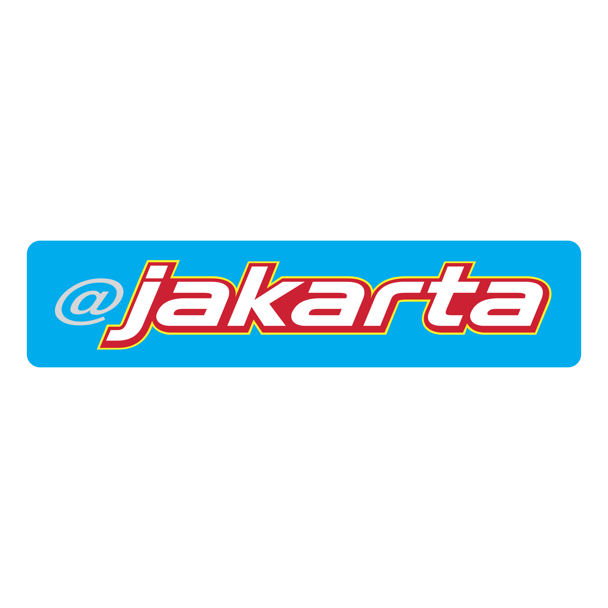
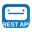
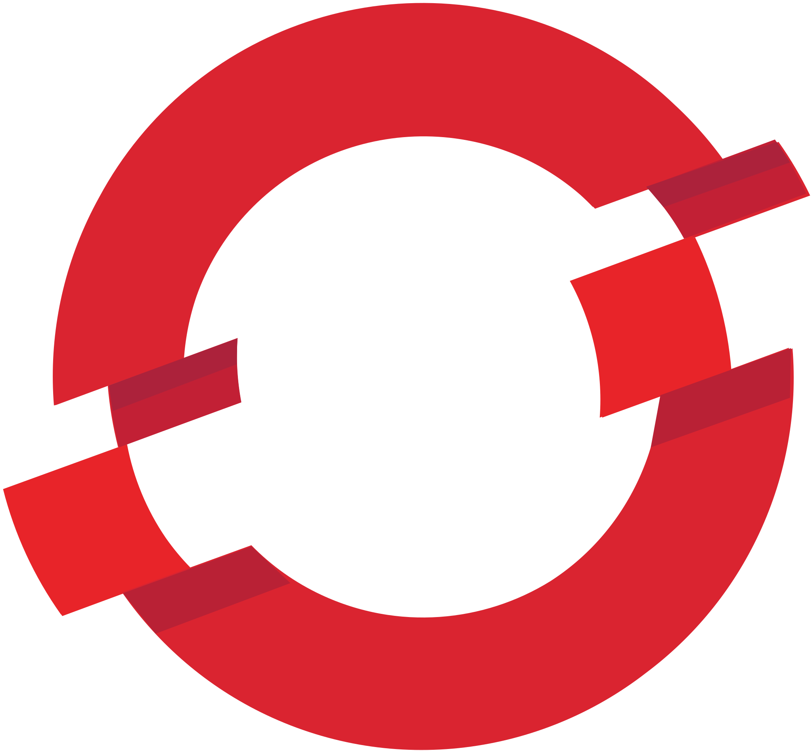
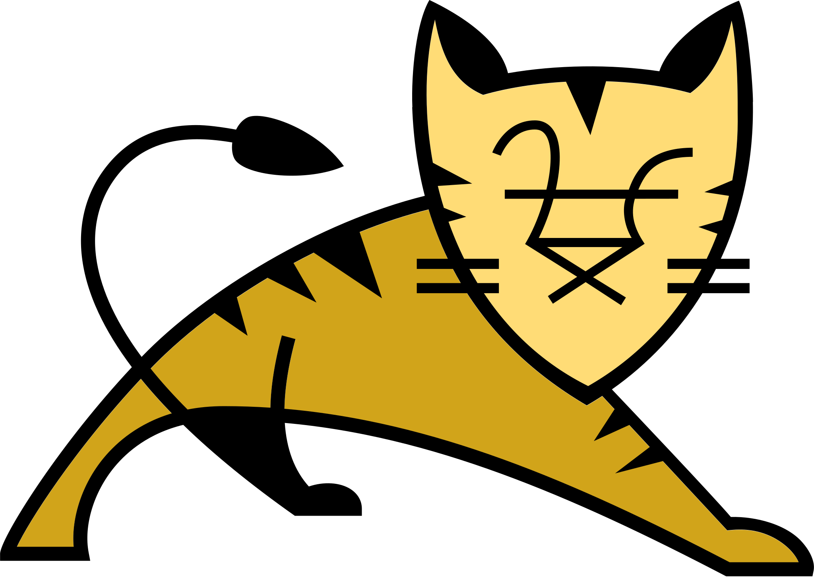

Current Role
Software Development Engineer at MetLife Insurance KK, delivering enterprise-grade insurance platforms in Tokyo.
Software Engineer | Tokyo, Japan
7+ years of transforming finance business by improving scalability, automation maturity, and release reliability. I bridge architecture, execution, and business strategy to deliver systems that scale and perform.
Software Development Engineer at MetLife Insurance KK, delivering enterprise-grade insurance platforms in Tokyo.
Combines hands-on engineering with technical leadership to align delivery quality, speed, and business priorities.
Reduced annual operating cost by approximately 18M JPY through testing automation and improved platform scalability by modernizing legacy services using microservice architecture, DevOps practices, and Cloud adoption.
Leads end-to-end delivery using Agile and SAFe practices, with disciplined execution, risk management, and reliable release cadence.
Has a working understanding of Agentic AI concepts, LLM integration, RAG fundamentals, and MCP server development.
Native English speaker with Japanese proficiency at N3 (conversational) level, can do effective day-to-day collaboration in a Japanese workplace.

Jakarta EE
REST API
OpenShift
TomcatSoftware Development Engineer | Jun 2023 - Present
Application Developer | Oct 2018 - May 2023
Deliver different insurance products to production using Agile methodology, ensuring faster time-to-market, iterative delivery to business, and strong collaboration between business and engineering teams.
Leveraged cloud-native technologies and Agile delivery frameworks to drive scalable digital transfor-mation.Azure IaaS to PaaS, Azure Cosmos DB implementation, aligning architecture with long-term scalability and operational excellence.
Modernized a legacy monolithic system into containerized services, significantly improving scalability and enhancing operational release capabilities using DevOps practices, without disrupting core functionality.
Added a new service to the existing monolithic framework to provide full-period support for deposit and withdrawal details reporting, improving reporting continuity and operational reliability.
Designed and implemented a regression automation framework that reduced operational expenditure by approximately 18M JPY per year.
| Degree | Institute | Year | Score |
|---|---|---|---|
| M.Tech, Computer Engineering | VJTI, Mumbai | 2018 | CPI 8.83 |
| B.E, Computer Science Engineering | KIT, Kolhapur | 2015 | 62.03% |